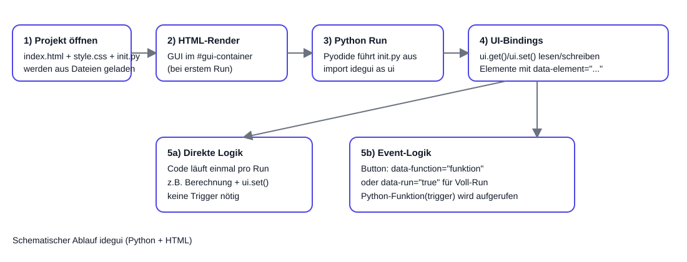

Übersicht, Ablauf, Quickstart und vollständige API-Referenz
idegui verbindet Python-Code in init.py mit HTML-Elementen in index.html.
Die Oberfläche wird in #gui-container gerendert, Python läuft über Pyodide im Browser.
Das Diagramm zeigt den technischen Lauf von Projektstart bis Trigger-Ausführung.

Code läuft bei Run einmal durch und schreibt Ergebnisse mit ui.set() ins HTML.
Buttons/Forms mit data-function="funktionsname" rufen gezielt Python-Funktionen auf; data-run="true" startet den kompletten Run.
def meine_funktion(trigger):index.html – Struktur und Elemente mit data-elementstyle.css – Stylinginit.py – Python-Logik mit import idegui as uiBei HTML-/Mixed-Templates werden diese Dateien automatisch angelegt.